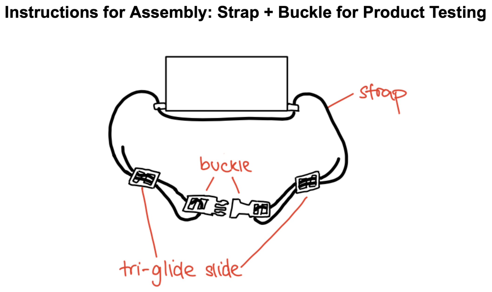

Research phase
Meemo makes distance trackers for parents and young children, providing a haptic signal when the safety distance is exceeded. In my project, I created a prototype strap mechanism based on field research and understanding of existing and competitor products.
Since I was abroad in Germany for the summer, I had to think outside the box to conduct effective primary research. I visited watch shops to find competitor features popular among adults and younger audiences.
Design and mockup testing
I used existing products and adult and child body dimensions to create an assembly plan. This design's purpose was to use off-the-shelf parts for rapid assembly to start user testing. My Evanston colleagues and I assembled the strap for adult and child tests. We integrated my strap design into the minimum viable product (MVP) by the end of the summer.

Adjusting the device housing
I modified the existing device housing using SolidWorks to accommodate straps as well as circuitry/speaker/haptics motor integration. A key takeaway from this project was Design for Manufacturing (DFM) and Design for Assembly (DFA) techniques.